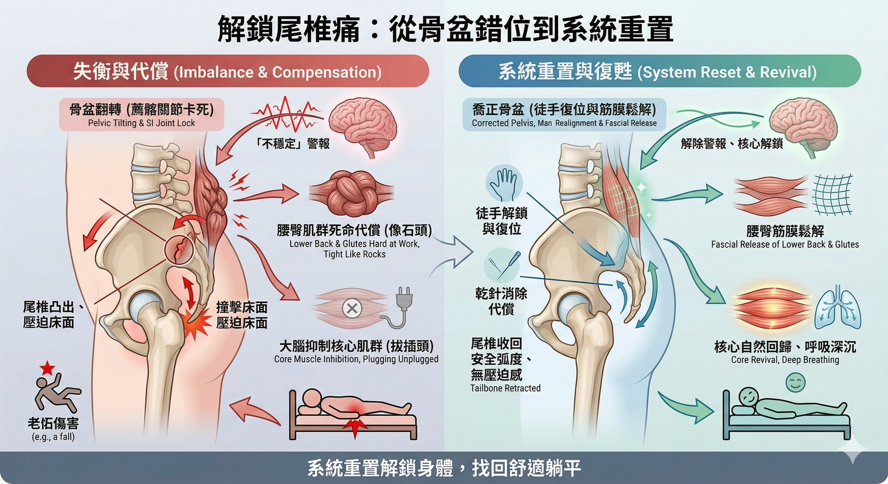

躺平就覺得「尾椎」狂頂床？原來是骨盆卡住了
【 躺平就覺得「尾椎」狂頂床？原來是骨盆卡住了 】
「醫師，我只要一躺平，尾椎骨就像個腳架直直頂著床面，超痛！常常下意識要用力『夾緊屁股』當作肉墊，才不會那麼難受……」
這段話，是不是精準說中了不少人的心聲？
這週診間來了一位被「尾椎痛」折磨多年的年輕女性。多年前受傷後，這個困擾就一直跟著她。最近半年，疼痛甚至像藤蔓一樣蔓延，連帶臀部、大腿外側、薦髂關節和腰部都開始隱隱作痛，偶爾還伴隨微麻感。
更令人氣餒的是，即便平時有規律練瑜伽、運動，也尋求了許多治療方式，但腰臀永遠硬得像石頭；而「核心肌群」就像拔了插頭一樣，怎麼出力都無感。
為什麼越認真放鬆、越努力運動，身體卻越來越卡？
🔍 破解密碼一：不是尾椎變長，是骨盆「翻轉」了
透過中醫脈診與理學檢查，很快便揪出了幕後黑手：真正的問題不在尾椎，而在於整個「骨盆帶」錯位卡死了。
我們的骨盆就像一個水桶，尾椎連在最底端。當曾經的跌倒或舊傷，導致骨盆的樞紐（薦髂關節）卡住，整個水桶的角度就會發生翻轉。這時，底部的尾椎被迫改變原本隱藏的角度，向外凸出。這就是為什麼你一躺下，它會精準地「撞擊」床面。
⛔ 破解密碼二：大腦為了保護你，強制關閉核心
骨盆卡死，影響的絕對不只是一根尾椎。當骨盆失去正常的力學傳遞，死鎖的關節會不斷發送「這裡不穩定」的危險訊號給大腦。
大腦接收到訊號後，會立刻啟動兩道防禦機制：
1. 命令腰臀肌群死命加班：把周圍的筋膜全部繃緊，當作天然護腰（這就是你腰臀永遠緊繃的原因）。
2. 強制拔掉核心的插頭： 地基都不穩了，大腦會「抑制」深層核心肌群的發力，避免你受傷。
這就是核心永遠練不起來、呼吸變淺的真相。在錯誤的結構排列上，大腦的安全鎖沒解開，再怎麼練核心都是白工。
✨ 系統重置：找回舒舒服服躺平的權利
面對這種連鎖當機，我們不能只治標，必須從地基開始「系統重置」：
- 徒手解鎖與復位： 透過輕柔精準的徒手技巧，將錯位的骨盆溫和修正，重新恢復髂骨與薦椎應有的生物力學微小滑動。把水桶喬正，尾椎自然收回安全的弧度。
- 乾針消除代償： 配合肌筋膜乾針，把因為長期代償而死鎖的腰臀筋膜徹底鬆解，消除干擾大腦的神經抑制訊號。
療程結束當下，我請她直接在診療床上平躺測試。她習慣性地又想夾緊屁股，但下一秒卻驚訝地說：「壓迫感完全消失了！我終於可以放鬆把重量交給床了！」
當她起身活動，骨盆帶的沉重感一掃而空。更棒的是，當大腦解除了警報，她的核心力量自然回歸，呼吸也跟著深沉舒暢起來。
👨⚕️ 醫師的小叮嚀
如果你也有尾椎頂床的困擾，甚至伴隨腰臀緊繃、核心無力，請別再勉強自己硬練。這其實是身體在提醒你：骨盆的力學需要一次專業的「重新校正」了。找回結構的正確排列，身體自然會把失去的舒適感還給你。
#尾椎痛 #骨盆錯位 #薦髂關節 #核心無力 #躺平痛 #肌筋膜乾針 #中醫徒手治療
太初中醫診所 東門中醫
中醫師 黃彥鈞
---
🔎 實證醫學參考 (References)：
- Vleeming, A., et al. (2012). Journal of Anatomy. (闡明薦髂關節微小動態對骨盆帶力學傳遞之重要性，關節失能會導致尾骨相對位置改變與周邊肌肉代償。)
- Hodges, P. W., & Richardson, C. A. (1996). Spine. (證實骨盆與下背部結構失能，會導致大腦延遲或抑制深層核心肌群之啟動。)
【 ⚠️ 免責聲明與就醫提醒 】
本文所分享之臨床案例皆已進行去識別化與隱私保護處理，內容僅供醫療衛教觀念交流與參考。每位患者的身體結構、疾病進程與疼痛成因皆屬獨特個案，治療效果因人而異。若您有任何身體不適，請尋求受過正規訓練之專業醫師進行當面評估與鑑別診斷。
